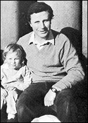

CHAPTER
FOUR
Stamp Out The Squirrels!
A squirrel is doing something entirely
different. He doesn't understand any of the principles so he makes up a bunch of them to
fulfill his ignorance and voices them off on a pc [Preclear] and gets no place.
- L. RON HUBBARD, Dianetics
and Scientology Technical Dictionary
The major obstacle to the continuance of Scientology
outside the Church was that the Independents did not have all of the so-called
"confidential" materials. They had the OT levels up to NOTs (which was listed as
"new OT5"), but not NOTs itself. The NOTs issues are held by the Advanced
Organizations of the Church of Scientology. That is to say there were copies at Saint Hill
in England; at Los Angeles; at Clearwater, in Florida; and at Copenhagen, in Denmark.
 Former Sea Org executive Robin Scott (right)
saw the increasing autocracy of the Church, and made grand plans to save Scientology.
While most Independent Centers were run from front rooms on a shoestring, Scott purchased
a baronial mansion near Aberdeen, Scotland, the breathtaking Candacraig House set in over
twenty acres with two lakes. It came to be known as "the castle."
Scott attempted to acquire the NOTs materials through
a Saint Hill staff member, but failed miserably. His attempt only served to alert Saint
Hill, and tighten up their security. So Scott met with Morag Bellmaine and Ron Lawley of
the East Grinstead Independent Center, and in December 1983, they mounted their own
commando operation. They did not know that David Mayo, who had written the original NOTs
materials with Hubbard, was already producing a new version. They could have saved
themselves, and many others, a great deal of trouble.
The trio travelled to Denmark. During the afternoon
Scott went into the Advanced Org in Copenhagen to see if anyone was them who knew either
of his partners. Scott pretended to be interested in paying a great deal of money for NOTs
auditing, so was treated like royalty, and given a guided tour. He memorized the layout of
the building, saw no one he knew, and returned to brief Ron and Morag.
Late that evening, dressed to the gills in Sea Org
uniform (and with Bellmaine wearing the wrong cap-badge for her supposed rank), Lawley and
Bellmaine walked into the Copenhagen Advanced Organization. They had carefully drilled the
dismissive attitude of Sea Org missionaires, and demanded to see the Commanding Officer.
He arrived, quivering. Lawley said they were "on mission" from the Religious
Technology Center, and had come to investigate serious "out-tech." Here they had
taken a chance as there might have been an RTC mission there already. To their surprise
the CO readily admitted to "gross out-tech," but said he had sent his Senior
Case Supervisor to Florida for retraining, and what more could he do? The bullying
missionaires told him what more. He could show them a NOTs pack, because they were sure
there was something wrong with the materials, so poor were Copenhagen's results.
The Commanding Officer did not hesitate, rounding up
every available NOTs pack, and apologizing that two of his Auditors were still in session
with theirs. Lawley and Bellmaine found themselves in a private room, with over thirty
NOTs packs. They loaded two into a brief case, and their feet didn't touch the ground
until they had left Denmark.
George Orwell's fated 1984 began for Scientologists
with a taped message from Ron Hubbard, the first in a year. It was called "Today and
Tomorrow: The Proof," and retailed to Church members at $22 per cassette. Hundreds
were sent free of charge to Independents (paid for by "donations" from Church
members, in fact). The tape was a departure from the usual Hubbard procedure. The talk was
scripted, and there were interruptions throughout, where Hubbard was asked questions,
given answers, even corrected on some slight underestimation of a statistic, or assured of
the enthusiasm generated by his recent bland issues. The statistics were very good, taken
at face value, but when Independent Jon Zegel cross-checked them, for his third taped
talk, he discovered several major inconsistencies. The talk was the longest eulogy ever
delivered by Hubbard about management:
The Church had some hard times a few years ago.
For a very long while, as you know, I have not been connected with active management of
the Church ....It took quite a while, I'm told, for the Church to sort itself out
....Scientology Churches are very vast and influential global organizations, and there
were people around whose claws itched to take them over, and in a perverted form exploit
them for their own profit. . . . Certain people infiltrated the Legal department, the old
Guardian's Office, and set it up to lose left and right, and get people in trouble. They
also infiltrated top management. Being off lines I was not involved with any of this ....
At last a small hardcore group of founding members, devoted on-Policy, in-Tech
Scientologists who suddenly understood what was happening, used their power as trustees
and just as it looked like the Churches were finished and about to fall into hostile
hands, they suddenly isolated the infiltrators and threw them out.
Hubbard showed none of his usual loud humor on the
tape. He sounded cheerful, but somehow the power was gone, if indeed it was Hubbard's
voice. By this time the Messengers had very sophisticated sound equipment, and some
Independents insisted that a Fairlight synthesizer had been used to generate a voice
similar to Hubbard's. The solution was probably far simpler: the tape was processed with
Hubbard's "Clearsound," a rather primitive filtering system, which would have
reduced the impingement of Hubbard's gasping breathing, giving the voice its slightly
artificial feel. At the beginning of 1984, proof positive of Hubbard's support of the CMO
might have induced many resignees to return. The tape simply was not enough.
The Advanced Ability Center East Grinstead came into
being in January 1984, in a loose alliance with Mayo's group in Santa Barbara. In
February, Robin Scott opened Candacraig House, in Scotland, and it became the third AAC.
Independent Centers were springing up throughout the U.S. and Europe.
In February, Independents received the first mailings
from the anonymous "Stamp Out the Squirrels Committee," postmarked Los Angeles.
The letters were headed with the design of a badge distributed within the Church,
depicting a gleeful cartoon squirrel, rubbing its paws together, in a red circle, with a
red bar across it. The anonymous letters carried this logo, with the legend
"Trademark Religious Technology Center" printed beneath it.
The principal target of these scandal sheets was David
Mayo. Mayo and his staff were attacked in fifteen newletters dated from February to April
1984. Of the suggestion that Mayo might be able to release the long awaited Operating
Thetan levels above OT7, the second letter said this: "Obviously he doesn't care
about people's spiritual freedom, so what is his motivation in making this false promise -
money?" Mayo's group were charging about a fifth of Church prices.
Mayo and his staff were pilloried unrelentingly. Of
course, this character assassination convinced many members that the Church really had
gone crazy. Most of the letters were couched in such elaborate Scientologese that they are
difficult to comprehend without a sizeable glossary.
The first letter said, "Rumor in the field has it
that the clientele now frequenting the Mayo Clinic [i.e., the AAC] has regressed from the
'colorful' to the 'bizarre.' "From the second letter: "The numbers of
disillusioned's [sic] who have failed to find the 'Holy Grail' at Mayo's are
growing in alarming numbers. Many are now saying they wished they'd listened to and
duplicated [understood] 'The Story of a Squirrel.' The more fortunate one's [sic]
are applying Ron's tech and are on the road to getting their cases unsnarled."
The attack on the AAC did not stop at venomous libels.
The AAC's offices were watched constantly by private investigators. Mayo was followed day
and night. Listening devices were quite openly aimed at the windows of counselling rooms.
A Religious Technology Center "mission" was permanently posted to observe and
interfere with the AAC.
In England, in January 1984, four health
professionals, three of them medical doctors, resigned from the Church and mailed their
joint resignation broadly to Scientologists. A copy found its way to the national Daily
Mail newspaper. There had been a tacit agreement between the Church and the
Independents that Scientology's dirty linen was best kept out of the public view.
Journalist Peter Sheridan, broke through that agreement. Sheridan interviewed a father
whose three teenage children had "disconnected" from him. The children's mother,
who had remarried, was a Sea Org member. The youngest child, aged thirteen, had written a
disconnection letter to his father. Sheridan had also spoken to an Independent whose
children had been expelled from Greenfields, the East Grinstead school run on Scientology
principles. On February 11, the Daily Mail carried a full-page article titled
"We disconnect you!" or in its northern issue, "The Disconnection
Terror."
The Office of Special Affairs had retained not only
many of the old Guardian's Office staff, but many of the old tricks too. Robin Scott, who
had helped extract the NOTs materials from the Advanced Org in Denmark, was phoned by a
prospective customer inviting him to Sweden. His air fare would be paid. Scott boarded a
plane which stopped at Copenhagen on March 13, Hubbard's birthday. He was apprehended at
Copenhagen airport. Sea Org members accompanied the arresting officers, and took
photographs of the whole affair.
During the course of Scott's incarceration, an opinion
was sought on the authenticity of Hubbard's signature on the documents transferring his
Scientology trademarks to the Religious Technology Center. These had been examined by an
American expert at Michael Flynn's request in May 1983. The expert had stated that the
signatures "were not written by the individual represented" in the specimen
signatures provided. A signed letter dating from the 1950s, definitely written by Hubbard,
was given to a Scandinavian expert, who said there was "a probability amounting
almost to certainty" that the RTC signatures were not Hubbard's. She added
that this is the most definite statement given by handwriting experts.
Diane Voegeding, who had formerly been the Commanding
Officer of the CMO, came to Scott's aid by giving an affidavit that questioned the
Religious Technology Center's right to the trademarks. Voegeding said that David Miscavige
was in fact the Notary Public responsible for Hubbard's legal documents, and that
Miscavige illicitly kept a book of undated Hubbard signatures.
On March 23, 1984, the English High Court issued a
Summons on behalf of the "Church of Scientology Advanced Organization Saint Hill
Europe and Africa" requesting an injunction against Robin Scott, Morag Bellmaine and
Ron Lawley to restrain them from the use, distribution or copying of the stolen NOTs
packs. A temporary injunction was issued, pending the response of the defendants. The
surveillance by private detectives continued. A similar order was issued in Scotland a few
days later, again naming Scott, and adding several of the staff at Candacraig.
The East Grinstead newspapers carried an article
announcing that the Church was offering a £120,000 reward for information "leading
to the recovery of what are said to be scriptures stolen from its European
headquarters." The use of the word "scriptures," first introduced at the
Mission Holders' Conference in 1982, still came as a surprise. Despite Scientology's
alleged religious nature, very few Scientologists thought of Hubbard's writings as
scriptures. After all, Hubbard claimed that they were scientific research.
After nearly five weeks in jail, the theft charge
against Robin Scott was thrown out by the Danish judge, but he was found guilty of a
mixture of industrial espionage and trespass. He was given a four-month sentence, the
remainder of which was suspended. The Church issued a triumphant account in their
"Keeping Scientology Working News." In the newsletter, Scott is called an
"apostate," and there are three photographs taken at the time of his arrest, all
giving a good view of the back of Scott's head.
In March 1984, Hubbard reinforced his alibi for
failures of the Tech. Such failures could be attributed to insufficient Security Checking,
"evil purposes," communication with Suppressives, or paying heed to any
criticism of Scientology. Many Independents had received tens, even hundreds of hours of
such counselling while in the Church. In fact, this obsession with the evil that men do
was a major reason for the disintegration of the Church. 1
Solo NOTs, or "New OT7," had been released
to Scientologists in 1979. After five years, usually of daily "solo-auditing,"
no one in the Church had finished the level. With some relief, Independents were at last
allowed to attest their completion. Realizing the situation, the "Captain" of
Flag, in Clearwater, sent out a letter to Church members on this highest level, saying how
alarmed he was that no one had finished. A flood of Church completions started three
months later.
In the United States, Religious Technology Center
member Kurt Weiland had moved into an apartment above the AAC in Santa Barbara. While
there Weiland did everything possible to upset those below, including haranguing and
snapping photographs of arriving clients, and playing deafening music. Eventually, an
injunction was issued protecting Mayo and his staff and clients from this childish but
extremely disturbing behavior.
Such harassment of Independents was widespread. An
Independent was picked up by Swedish police, again accompanied by Sea Org members. It took
three days for the police to realize that they could not charge the man, and he was
released. A girl was picked up in Munich, again based on trumped up charges. She was
released, but the aftermath was a little more serious. At the end of May, German officials
raided both the Scientology Org and the Mission in Munich, and carried away reams of
documents.
Shortly before the German raid, Scottish Independent
Fred Smithers called me. He explained that his stepson, Gulliver, was a member of CMO U.K.
at Saint Hill. Gulliver had just phoned him to say he wanted to leave the Church. Fred
asked if I could give Gulliver a room for the night. He arrived that Sunday evening while
we were having dinner with friends. It came as a shock when he realized his stepfather had
sent him into the lair of an infamous Suppressive, but he soon recovered and sustained a
two-hour interview. The incredulity of his audience increased by the minute.
For six months, Gulliver had been a top executive in
the Commodore's Messenger Organization U.K. which controlled all other Scientology
organizations in Britain. He rated himself one of the top four executives in CMO U.K. He
was fourteen years old. He explained that there were several others his age, and
some "kids" in the CMO.
The Watchdog Committee was now bypassing the whole
elaborate management structure of the Church. WDC was sending telexes down to individual
Orgs on a daily basis, often hourly, demanding "compliance."
A CMO newsletter had claimed that the CMO
"Continental" units (including the U.K.) are "the OBSERVATION, EXECUTION
and POLICE ARM of WDC" (emphasis in original). 2
Gulliver's job was to enforce Watchdog Committee orders. He had been in charge of seasoned
Sea Org veterans, OTs who had received a great deal of auditing, and were highly trained
counsellors well versed in Scientology administration, having done the "Organization
Executive Course," and sometimes even the "Flag Executive Briefing Course."
They had had months of training, and years of on the job experience. Gulliver had neither.
In a Scientology Organization everything is meant to
be done per Policy (in accordance with the thousands of Policy Letters written almost
exclusively by Hubbard). Policy is very elaborate, but hinges on certain basic ideas.
Among these are the supposed right to question an order, and the right to demand that an
order be put in writing. A CMO teenager would frequently issue a verbal order, and
threaten the recipient with the Rehabilitation Project Force (RPF) if the order was
questioned. Again the staff member theoretically has a right to demand a Committee of
Evidence prior to assignment of the RPF, which is reasonable as an RPF can take anything
up to two years to complete. These rights were all denied.
Gulliver said that all of the U.K. Organizations were
losing money. He also said that the majority of the money they did make was sent to the
U.S., so periodically the Watchdog Committee would have to pay even the lighting and
heating bills, following a complex Purchase Order system. Nearly all of the U.K. Orgs had
their telephones disconnected at some point during 1984, because of the delay in receiving
funds.
The Sea Org crew at Saint Hill had been living on a
diet of rice and beans throughout Gulliver's six months there. The high point of their
week would be a baked potato with cheese, or soup. This diet, and the deprivation of sleep
which is usual for Sea Org members, can tell dramatically. Sea Org members have for years
collected hundreds of millions of dollars, in return for bare subsistence and pitiful
"wages." Gulliver was paid £1.25 for his last week's work, (less than $2 U.S.),
and this as a senior executive. Sea Org pay is usually less than £4 a week, and often
measured in pence. With this pittance, most buy chocolate, tobacco, or a junk meal on
their weekly morning off.
Most alarming of all, the fourteen-year-old Gulliver
talked about the last Watchdog Committee program he had worked on, the "Non-SO spouse
program" ("SO" being Sea Org). Sea Org members whose spouses were not in
the Sea Org were either to persuade them to join up, or to divorce them. When I wrote my
article about the meeting (inevitably called "Guiliver's Travels") for the
Independent newsletter, Reconnection, I felt compelled to draw a parallel to the chapter
in Lewis Carroll's Alice in Wonderland called "The Queen's Croquet
Ground," where the players use live hedgehogs for balls, and flamingos for mallets.
The Church had entered the realms of the utterly surreal.
FOOTNOTES
Sources: Interviews with Ron
Lawley and Morag Bellmaine; interview with Gulliver Smithers, East Grinstead, May 1984.
1. HCOB, "Dianetic Clear
Solved," 27 March 1984
2. Central Bureaux Order 746,
"Organization Pattern: Continental Commodore's Messenger Orgs," 16 August 1983 |